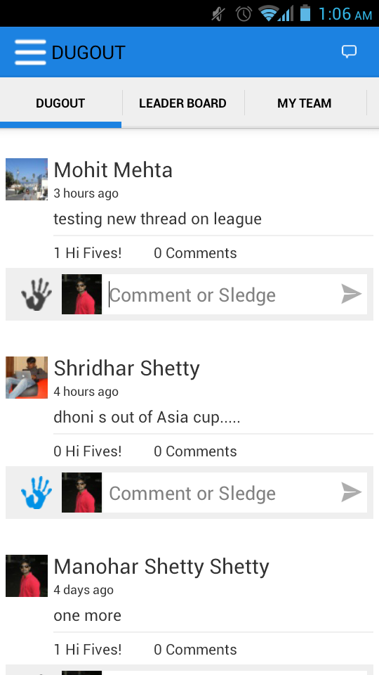
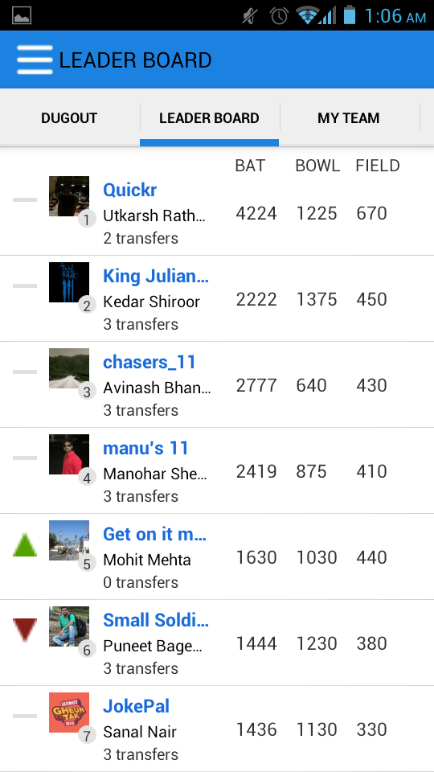
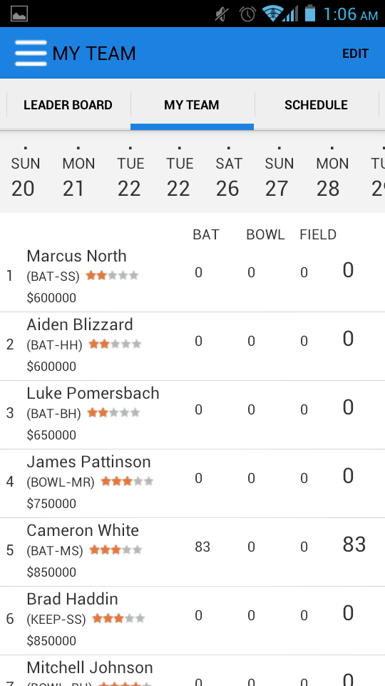
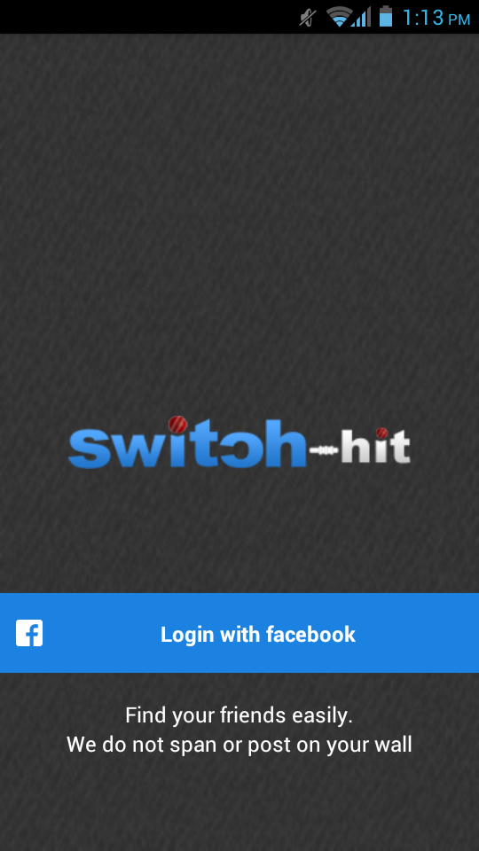
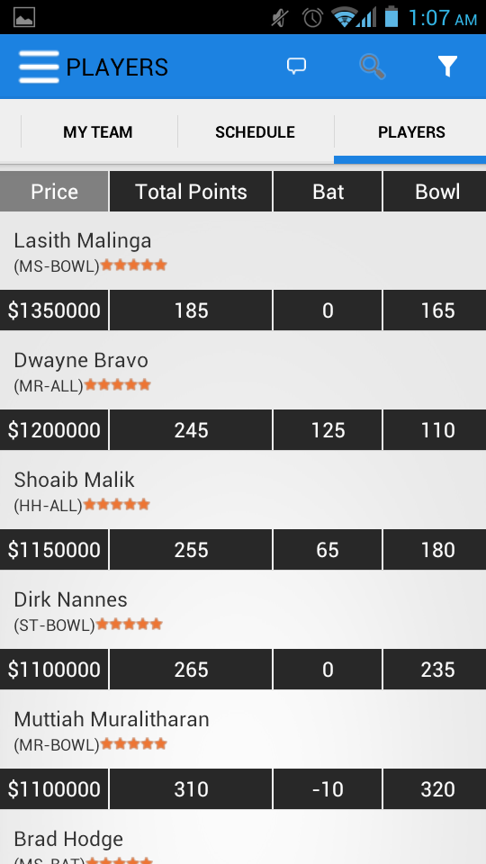
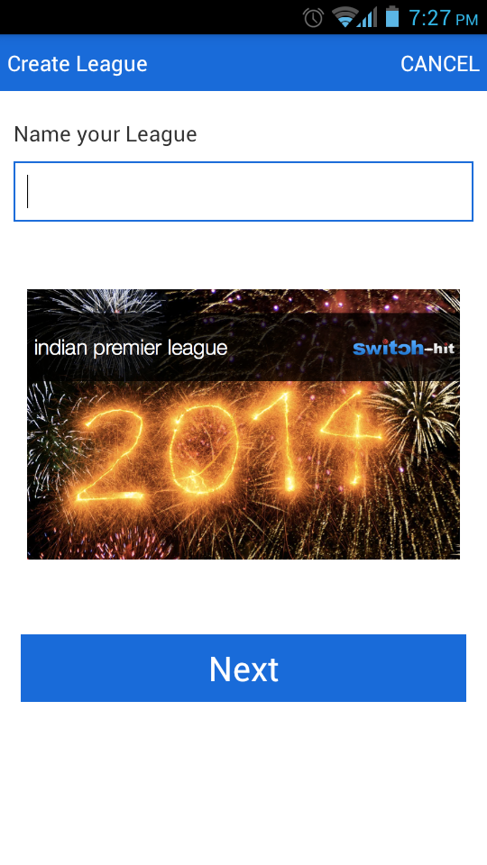
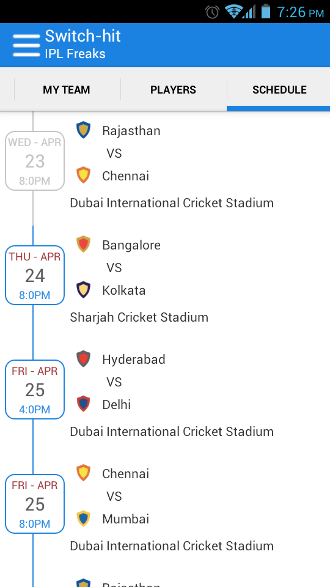
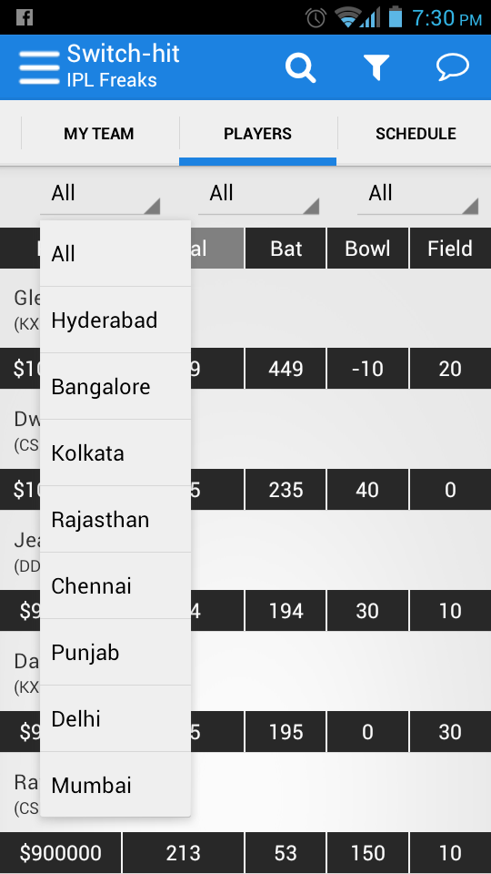
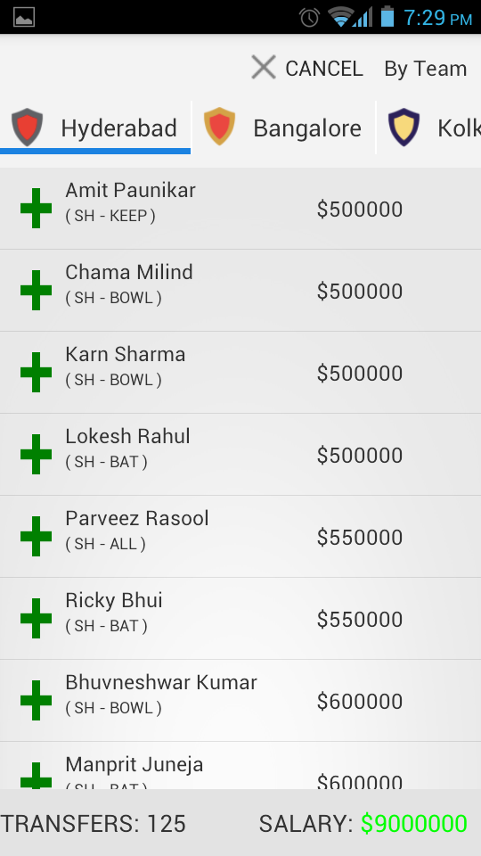

SJB Institute of Technology |
A Project Seminar On
A Fantasy Cricket game with unmatched social experience
Manohara. K (1JB10CS054)
|
Chaitra.H K Asst. professor |
Ravindra kumar Switch-Hit |
Switch-Hit is a fantasy cricket application with the unmatched social experience. It will provide a platform that help friends to connect and make their own team with players they like and have fun with the friends. Users can view who is topper of league their batting, bowling and fielding points. Switch-Hit provides features to post, comment, Hi-Fi the post, schedule and players performance information
Fantasy sports is a social experience. It's about competing & having fun with friends. Current offerings stuck in the pre- social era focus on game formats news/statistics. They’ve completely neglected the social aspects and the huge engagement opportunity that comes with it, resulting in disjointed, siloed experiences for fantasy players.
"Just about every league has its own chat room or means
of communication"-Mashable, October 2013
Current offerings stuck in the pre-social era focus on game formats news/statistics. They’ve completely neglected the social aspects and the huge engagement opportunity that comes with it, resulting in disjointed, soloed experiences for fantasy players.
Existing systems are
| 
dugout |

leaderboard |

MyTeam |
| 
Login Screen |

Players Performance |

Create League |
| 
Schedule Screen |

Players Filter Sceen |

Edit Team Screen |